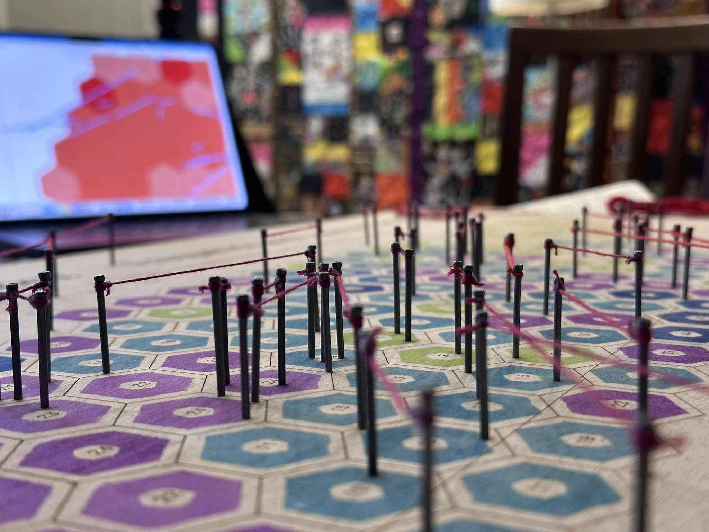
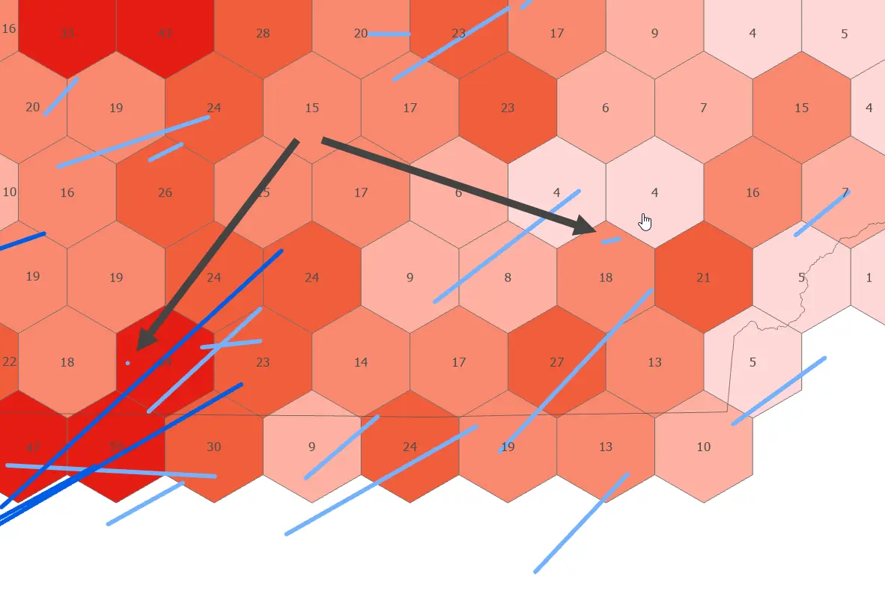
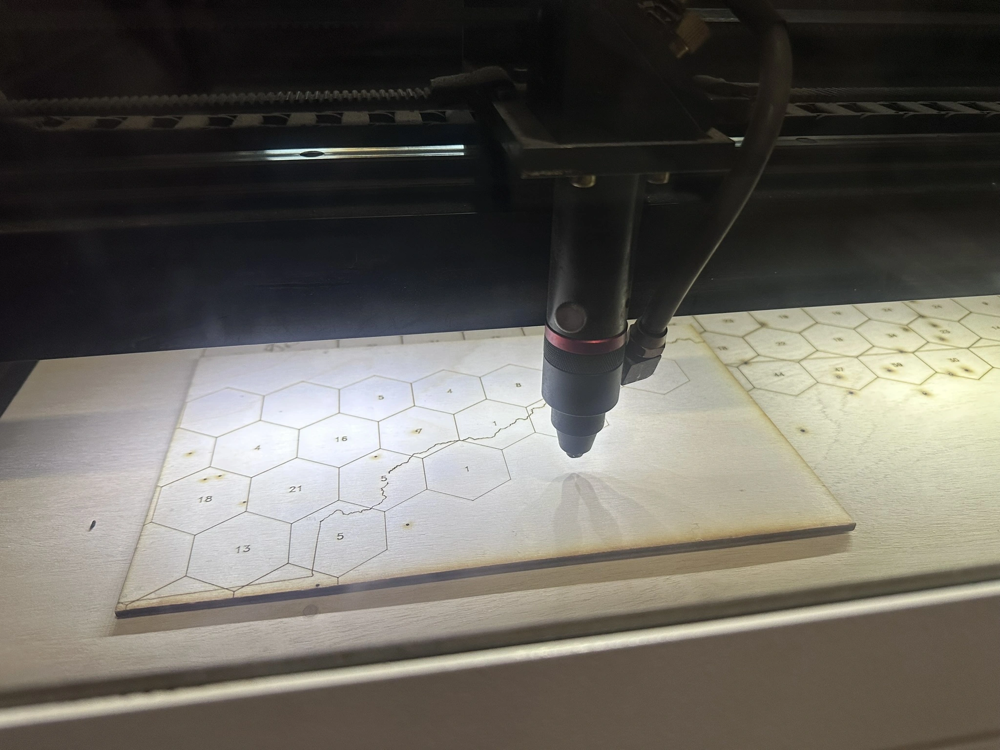
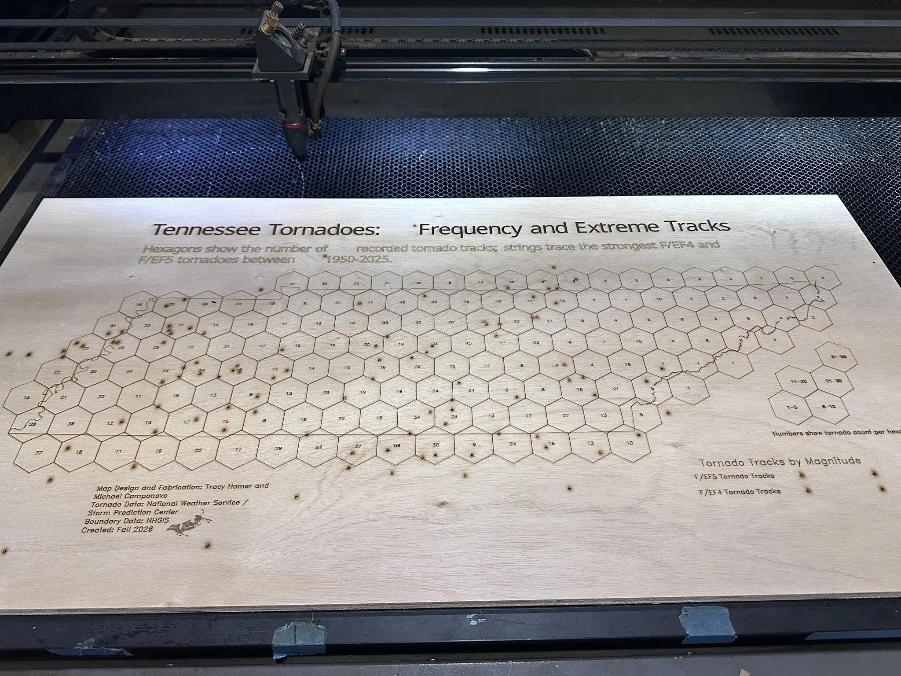
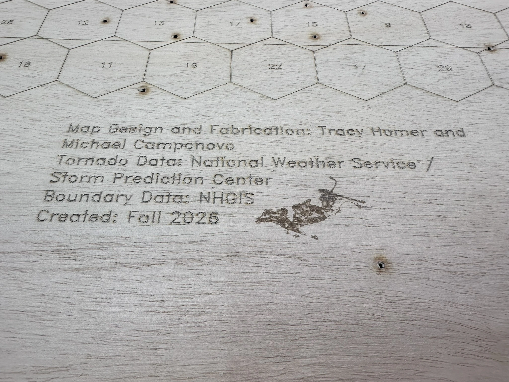
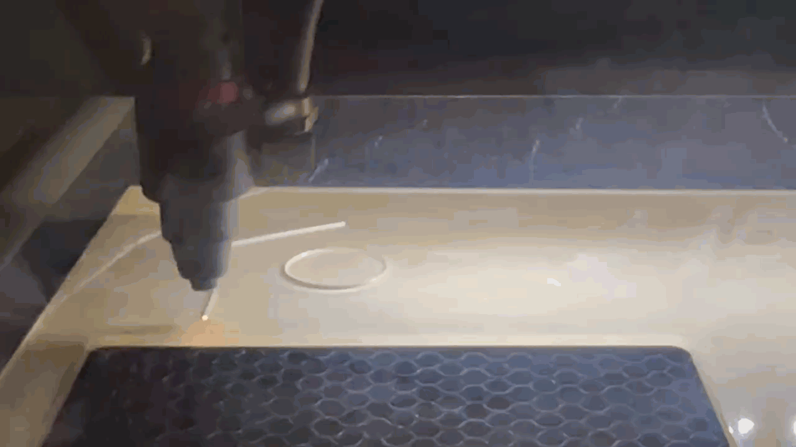
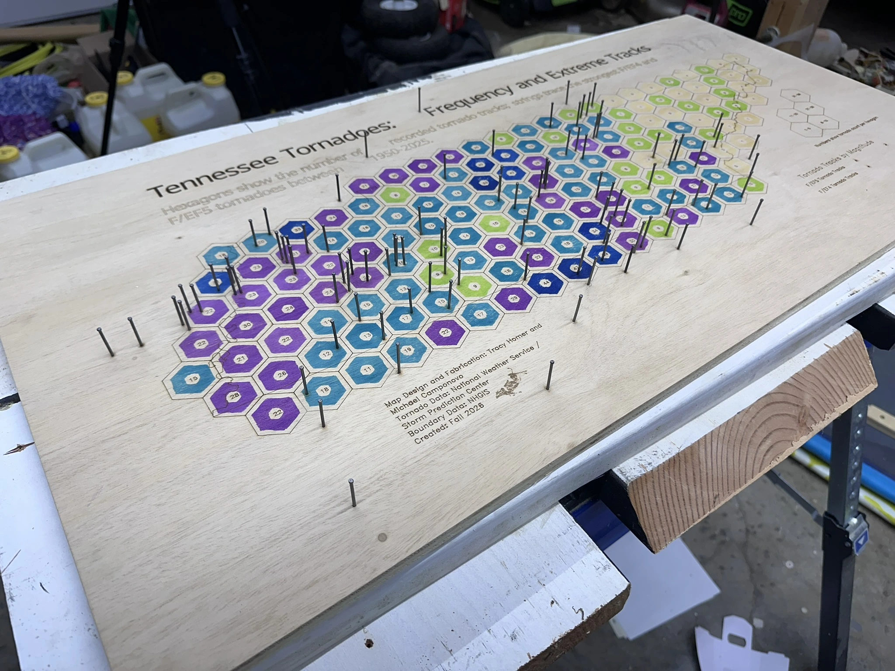
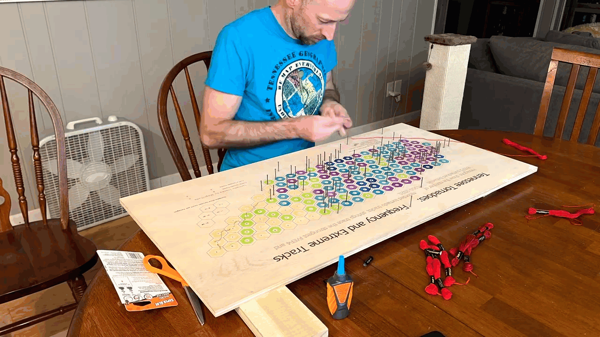
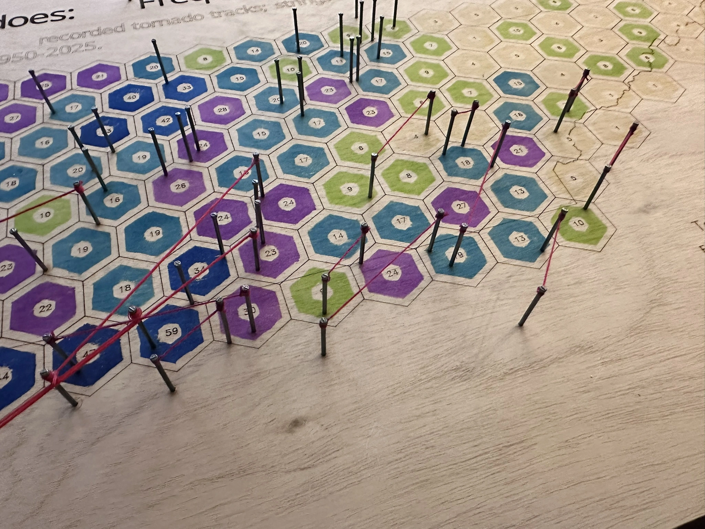
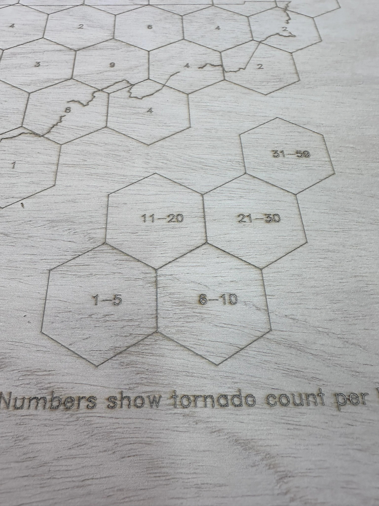

Tennessee Tornadoes: From GIS to a Physical Map

This project began with a question: what happens when a GIS map has to become a physical object?
The finished map shows the frequency of recorded tornado tracks across Tennessee using stamped hexagons, while the strongest tornadoes—F/EF4 and F/EF5 events—are represented with nails and red string. What began as a digital cartographic design became an experiment in translating GIS geometry, classification, and symbology into wood, ink, metal, and thread.
The project was developed collaboratively by Michael Campanovo and Tracy Homer, combining GIS/cartographic design with fabrication expertise.
The cartographic idea
The physical map communicates two aspects of Tennessee tornado history:
- Frequency — where tornado tracks have occurred most often.
- Extreme events — where the strongest F/EF4 and F/EF5 tracks occurred.
The final hexagon classes are:
- 1–5 tornadoes
- 6–10 tornadoes
- 11–20 tornadoes
- 21–30 tornadoes
- 31–59 tornadoes

Designing a GIS map for fabrication
Designing for fabrication changed decisions that would normally be trivial in a digital map. A line on a screen can be arbitrarily short. A physical tornado track represented by two nails and string cannot.
Generalizing the shortest tracks
Several very short tornado tracks did not provide enough physical distance for two pilot holes, nails, and string. Those tracks were selectively lengthened for fabrication while preserving their general location and orientation.

Design challenge: A cartographic symbol that works perfectly on screen may be physically impossible to build at the final map scale.
Moving from GIS to the laser cutter
ArcGIS Pro remained the geographic and cartographic master. The final geometry was exported as SVG, preserving vector linework for fabrication.


A small flying-cow reference was engraved into the marginalia as an Easter egg.

Building the frequency symbology by hand
The hexagon classes were applied manually using archival inks. Tracy fabricated a custom hexagon-donut stamp and clear registration jig so each stamp could be centered consistently.


Approximately 155 hexagons were stamped individually.
Turning extreme tornado tracks into string
Pilot holes were drilled at track endpoints, nails were installed, and red embroidery floss was stretched between them. Two red values distinguish F/EF4 from F/EF5 tornadoes.



When the legend needed a second pass
The first engraved legend revealed a late-stage problem: the class-break numbers were visibly misaligned. Rather than re-engraving the entire map, a revised legend was engraved and cut from 1/4-inch plywood, finished, stamped, and glued over the original.



Design challenge: Fabrication errors do not always require restarting a project. Sometimes the best solution is to redesign the problem into a new physical layer.
Explore the tornado data
The physical map deliberately reduces a complex tornado dataset into tangible symbols. The interactive web map provides access to the underlying geography and additional detail.
What the physical map changed
The most important lesson from the project was that a map stops behaving like a GIS layout once every symbol has to become a physical object.
The transition from digital cartography to fabrication required decisions about minimum feature size, material behavior, registration, tolerances, repair strategies, and how much geographic detail could survive translation into a tactile object.

Final result

The completed project combines GIS analysis and cartographic design with laser fabrication, custom tooling, hand-applied color, and string art. The digital companion map preserves access to the underlying tornado data, while the physical version emphasizes the material decisions required to turn geographic information into an object.
Tools and materials
GIS and design
- ArcGIS Pro
- ArcGIS Online / Map Viewer
- SVG vector workflow
Fabrication
- 18 × 36 inch plywood map surface
- CO₂ laser cutter/engraver
- Custom hexagon-donut stamp
- Clear registration jig
- Archival inks
- Pilot holes and 4D nails
- Red embroidery floss
- 1/4-inch plywood replacement legend
Data and credits
Tornado data: National Weather Service / Storm Prediction Center tornado-track data.
Boundary data: NHGIS.
GIS and cartographic design: Michael Campanovo.
Fabrication and fabrication problem-solving: Michael Campanovo and Tracy Homer.